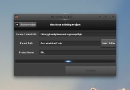
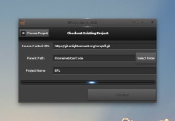

|  | |
| Wizard on start-up | Downloading remote repository (git) |
| Settings | Split Editor |
| Themes | Source Code Management |

| |
| Building and Desktop notification | Debugging |
Our aim is to create a new, native development environment for Linux that makes getting up and running easier than ever before. With so much happening on Linux both on the desktop and on mobile we want to help more developers get involved in the exciting future of open source development.
Below is a small tour of some of the new features included in the upcoming 0.7 release.
|  | |
| Wizard on start-up | Downloading remote repository (git) |
| Settings | Split Editor |
| Themes | Source Code Management |
|
| |
| Building and Desktop notification | Debugging |
Here's a video of the public announcement of the EDI project at the Enlightenment Developer Day 2014 in Düsseldorf.
To get up and running with the very latest in Linux development environments just follow these simple steps!
$ git clone https://github.com/Enlightenment/edi.git
$ cd edi
$ meson build.
$ ninja -C build && ninja -C build install
We also recommend installing the Faenza icon theme as it works fits really well. You'll need to install the theme and choose "Faenza Dark" from elementary_config.
Please send them in :) You can find us in the #edi-ide room on irc.freenode.net or leave a bug description at phab.enlightenment.org.
We like beer and patches. If you see a bug or would like a feature then feel free to code it up and submit a pull request!
If you're not ready to work on the code, too busy or you would just like to support the project then you can always donate at our Bountysource page.
Edi is developed by @ajwillia-ms and netstar with contributions from Yohoho, @wilsonk and others
{kind=link}
{kind=link}
{kind=link}
{kind=link}
{kind=link}
{kind=link}
{kind=link}